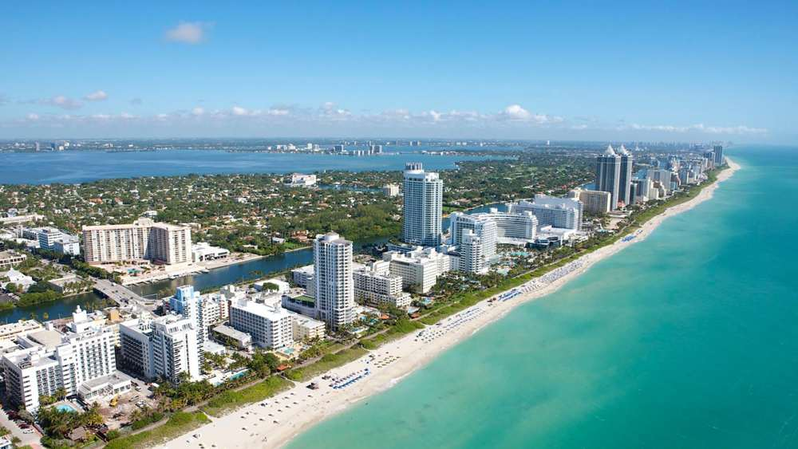

Bartow, Florida and all of Polk County
Professional cleaning. Dependable teams. Peace of mind. At SwanBright Cleaning and Facility Services, we believe a professionally cleaned space should offer more than a spotless appearance. It should give you confidence, comfort and peace of mind.
SwanBright Cleaning and Facility Services LLC is a locally owned cleaning company in Bartow, Florida. We provide residential cleaning, recurring house cleaning, deep cleaning, move-in and move-out cleaning, commercial cleaning, office cleaning and post-construction cleaning across Polk County, including Lakeland, Winter Haven, Mulberry, Fort Meade, Lake Wales and Auburndale. Every job comes with a written scope, a fixed quote and a trained team working from a checklist.
Choose the service that fits. Not sure? Request a quote and tell us about the space; we will recommend the right starting point.
Standard home cleaning with hotel-level attention to detail.
Weekly, biweekly or monthly visits on a schedule you can count on.
A detailed top-to-bottom reset for first visits and seasonal refreshes.
Empty-home cleaning for buyers, sellers, renters and landlords.
Consistent, scheduled cleaning for businesses and facilities.
Clean desks, spotless restrooms and a lobby that makes a good first impression.
Rough, final and touch-up cleans that get a project handover-ready.
We are not the cheapest option in Polk County. We are the one you stop thinking about, because it is handled.
You know exactly what is included before work begins. Written scope, fixed quote, no hidden fees and no surprises on the invoice.
One point of contact handles your booking, questions and changes promptly, by call or text, so you never have to guess.
Team leaders run every visit from a checklist tailored to your property. Recurring clients get the same team whenever scheduling allows.
Our founder trained in hotel housekeeping, where every room is inspected and every detail counts. That discipline shapes everything we do.
Four steps from first message to a standard we maintain for as long as you want us.
Tell us about the space, the service you need and your preferred schedule. We reply with questions or a walkthrough request.
For homes we confirm details by phone or in person. For businesses we walk the space and put the scope in writing so expectations are clear.
A team leader runs each visit from the same checklist. Supplies and equipment come with us.
We check our own work before we leave, ask for your feedback and adjust the scope as your needs change.
A clean space should bring peace of mind, comfort and confidence.
That belief comes from years of hotel housekeeping near Florida's coast, where cleanliness is not a preference, it is the standard. SwanBright was founded to bring that same discipline to homes and workplaces in Polk County, with trained teams and procedures that hold up visit after visit.
Our story
Based in Bartow and serving Polk County. If your city is not listed, ask; we may still be able to help.
Bartow is home for SwanBright.
ZIP 33830, 33831Lakeland is the largest city in Polk County and only a short drive north of our Bartow base.
ZIP 33801, 33803, 33805, 33809, 33810, 33811, 33812, 33813, 33815Winter Haven's chain of lakes, waterfront homes and family neighborhoods are a short drive east of Bartow.
ZIP 33880, 33881, 33884Mulberry sits just west of Bartow along State Road 60.
ZIP 33860Fort Meade is a short drive south of Bartow along US 17.
ZIP 33841Lake Wales sits on the Lake Wales Ridge east of Bartow, with a historic downtown, lakefront homes and a steady stream of new development.
ZIP 33853, 33859Auburndale sits between Lakeland and Winter Haven along the I-4 corridor, one of the fastest-growing parts of Polk County.
ZIP 33823Tell us about your home or workplace and the service you need. We reply with any questions, a walkthrough if needed and a clear written scope.
Every service runs on a written checklist, a trained team and a schedule we honor. Choose the one that fits, or ask and we will recommend.
Standard, recurring, deep and move-in or move-out cleaning for houses, condos, apartments and rentals.
Standard home cleaning with hotel-level attention to detail.
Weekly, biweekly or monthly visits on a schedule you can count on.
A detailed top-to-bottom reset for first visits and seasonal refreshes.
Empty-home cleaning for buyers, sellers, renters and landlords.
Scheduled commercial and office cleaning plus phased post-construction cleaning for contractors, builders and property managers.
Start with a deep clean, then move to a recurring plan.
That is a move-in or move-out clean. If there is construction dust, it is post-construction.
Offices go to office cleaning. Retail, clinics, churches and other facilities go to commercial cleaning.
Request a quote and we will reply with any questions, a walkthrough if needed and a clear written scope.
A professionally cleaned home should feel calm the moment you walk in. SwanBright brings trained teams, a written checklist and hotel-housekeeping discipline to homes across Bartow and Polk County.
SwanBright Cleaning and Facility Services provides residential cleaning in Bartow, Florida and nearby Polk County communities. Each visit follows a documented room-by-room checklist so the result is the same every time, whether it is your first clean or your fortieth.
Every visit follows this checklist. Add-ons can be included in your quote.
A clear scope is the first step to a fair price. Use this to see where the service sits.
| Task | Standard clean | Deep clean |
|---|---|---|
| Dusting visible surfaces and furniture | Yes | Yes |
| Vacuuming and mopping floors | Yes | Yes |
| Kitchen counters, sink, appliance exteriors | Yes | Yes |
| Bathrooms sanitized | Yes | Yes |
| Baseboards, door frames and trim | Spot clean | Hand-wiped |
| Cabinet fronts | Spot clean | Fully wiped |
| Ceiling fans, vents, light fixtures | Reachable only | All, detailed |
| Inside oven and refrigerator | Add-on | Add-on |
| Behind and under movable furniture | No | Yes |
Most standard cleans take two to four hours depending on the size of the home and how many team members are assigned. We confirm an estimated window before we arrive.
No. Many clients provide a key, a garage code or a lockbox. If you prefer to be home, that is perfectly fine too.
Yes. Our teams arrive with professional products and equipment. If you prefer a specific product for a surface or a sensitivity reason, let us know during the quote.
A standard residential clean maintains a home that is already in good shape. A deep clean is a more detailed first visit that reaches the areas a maintenance clean does not, such as baseboards, behind furniture and built-up grime. Most new clients start with a deep clean and then move to a recurring schedule.
Insurance details: pending
Residential cleaning cost in Bartow depends on square footage, bedrooms and bathrooms, the current condition of the home and any add-ons. SwanBright gives a clear, customized quote after reviewing your space, so you know exactly what is included before we start. Quotes are free and there are no hidden fees.
Tell us about the space and your timing. We reply promptly with a clear, written scope.
The real luxury is not one spotless day. It is never having to think about it again. SwanBright recurring cleaning keeps your home at a consistent standard with a schedule we actually honor.
SwanBright offers weekly, biweekly and monthly house cleaning plans for homes in Bartow and the surrounding Polk County area. Recurring clients receive a consistent team whenever possible, a fixed checklist and a reserved time slot, with reminders before every visit.
Every visit follows this checklist. Add-ons can be included in your quote.
A clear scope is the first step to a fair price. Use this to see where the service sits.
| Weekly | Biweekly | Monthly | |
|---|---|---|---|
| Best for | Busy families, pets, kids | Most homes | Small or light-use homes |
| Visit length | Shortest | Standard | Longer, more detailed |
| Per-visit price | Lowest | Mid | Highest |
| Rotating deep tasks | Every visit | Every visit | Every visit |
| Same team when possible | Yes | Yes | Yes |
| First visit | Deep clean recommended | Deep clean recommended | Deep clean recommended |
We assign a consistent team whenever scheduling allows. When a substitute is needed, they work from the same written checklist and the same notes about your home.
Yes. We ask for notice so the team's schedule can be adjusted. Details are confirmed in your service agreement.
Recurring service is an agreement you can adjust. We prefer earning your loyalty visit by visit rather than locking you in.
We recommend starting with a deep clean so your home is brought to the standard we will maintain afterward. Your quote will show both the first-visit price and the recurring price.
Core tasks are done every visit. Some deeper tasks rotate so that over a month every area of the home receives detailed attention.
Recurring cleaning is priced per visit and the rate depends on home size, frequency and condition. Weekly visits cost the least per visit because there is less to do each time. Your quote shows the first-visit price and the recurring price so there are no surprises.
Tell us about the space and your timing. We reply promptly with a clear, written scope.
A deep clean is where a hotel housekeeper's training shows. It is slower, more deliberate and reaches the places a regular clean does not.
SwanBright deep cleaning is a detailed, one-time service for homes in Bartow and nearby Polk County communities. It covers everything in a standard residential clean plus the buildup areas: baseboards, door frames, grout, inside cabinets on request, behind and under furniture, light fixtures, vents and appliance interiors.
Every visit follows this checklist. Add-ons can be included in your quote.
A clear scope is the first step to a fair price. Use this to see where the service sits.
| Cleaning task | Standard recurring clean | Deep cleaning refresh |
|---|---|---|
| Dusting visible surfaces and furniture | Yes | Yes |
| Vacuuming and mopping floors | Yes | Yes |
| Baseboards and door frames | Spot clean | Hand-wiped end to end |
| Cabinet doors and exteriors | Spot clean | Fully wiped |
| Tile and grout scrubbing (bathrooms) | Maintenance | Detailed |
| Inside microwave and kitchen detail | Basic | Detailed |
| Ceiling fans, vents and fixtures | Reachable only | All, detailed |
| Window sills and tracks | Sills | Sills and tracks |
| Behind and under furniture | No | Yes |
Usually four to eight hours depending on home size and condition. Larger homes may be scheduled with a bigger team or across two visits.
Deep cleaning includes thorough vacuuming. Carpet shampooing is not currently part of the service.
Yes, as an add-on. Tell us during the quote so we can allocate the time.
Picking up loose items and clearing counters lets the team spend their time cleaning rather than organizing, which gets you a better result.
Yes, and that is what we recommend. It sets the baseline we then maintain on your schedule.
Deep cleaning cost in Bartow depends on square footage, the amount of buildup and add-ons such as inside the oven or fridge. Because it is more detailed than a standard clean, it is priced higher per visit. SwanBright provides a clear written quote after reviewing the home; quotes are free.
Tell us about the space and your timing. We reply promptly with a clear, written scope.
An empty home shows everything. SwanBright prepares vacant properties so a landlord inspection, a listing photo or your first night in a new place starts clean.
SwanBright provides move-in and move-out cleaning for houses, apartments and rentals in Bartow and the surrounding Polk County area. The service is a full deep clean of a vacant property, including inside cabinets, closets, appliances and fixtures, so it is ready for inspection or occupancy.
Every visit follows this checklist. Add-ons can be included in your quote.
A clear scope is the first step to a fair price. Use this to see where the service sits.
| Task | Deep clean (lived-in home) | Move-in / move-out (empty home) |
|---|---|---|
| Inside all cabinets and drawers | On request | Yes |
| Inside oven, fridge and dishwasher | Add-on | Yes |
| Closets and shelves inside | No | Yes |
| Baseboards, doors, trim, switch plates | Yes | Yes |
| Window sills, tracks, blinds | Yes | Yes |
| Floors under movable appliances | No | Yes |
| Checklist and photos for landlord | No | On request |
Yes. Apartments, single-family rentals, condos and townhomes.
Yes. Tell us your deadline when requesting the quote and we will hold a slot for it.
Empty is best. If some furniture remains we will clean around it and note anything we could not access.
On request we can provide a completed checklist and photos of the finished unit.
Absolutely. Many clients start with a move-in clean and continue with a biweekly plan in their new home.
Move-out cleaning cost depends on square footage, number of bathrooms, whether the home is empty and the condition left behind. SwanBright quotes the job after reviewing the property so the price is fixed before we start. Quotes are free.
Tell us about the space and your timing. We reply promptly with a clear, written scope.
Your space says something about your business before anyone speaks. SwanBright keeps it saying the right thing, on a schedule, with a team that follows the same standard every time.
SwanBright Cleaning and Facility Services provides commercial cleaning for small and mid-size businesses in Bartow and across Polk County, Florida. Service is built around a written scope, a fixed schedule (daily, several times a week, weekly or as needed) and a point of contact who is accountable for quality.
A starting scope that we tailor to your space during the walkthrough.
A clear scope is the first step to a fair price. Use this to see where the service sits.
| Nightly | 2 to 3 times a week | Weekly | |
|---|---|---|---|
| Best for | Medical, retail, high traffic | Most offices | Small offices, churches, low traffic |
| Restrooms restocked | Every visit | Every visit | Every visit |
| High-touch sanitizing | Every visit | Every visit | Every visit |
| Floors | Every visit | Every visit | Every visit, more detailed |
| Rotating detail tasks | Weekly | Weekly | Monthly |
| Supplies and consumables | We supply or you supply | We supply or you supply | We supply or you supply |
Yes. Most commercial clients prefer evening or early morning service so there is no disruption.
We work from a written scope and schedule. Terms are set per client and reviewed together before service starts.
Yes. We can supply paper products, soap and liners and bill them with the service, or use what you provide.
Every site has a written scope, a team leader responsible for each visit and periodic walkthroughs with the client.
Team members are trained on our procedures and standards before working on a client site. Team screening details: pending
Commercial cleaning in Bartow is quoted after a walkthrough, based on square footage, frequency, number of restrooms, floor types and whether we supply consumables. You receive a written scope and a fixed monthly or per-visit price with no hidden fees.
Tell us about the space and your timing. We reply promptly with a clear, written scope.
Clients notice the lobby. Employees notice the restroom. SwanBright office cleaning takes care of both, quietly and consistently, so your team can focus on work.
SwanBright provides office cleaning for professional offices in Bartow and surrounding Polk County communities, including law and accounting offices, real estate and insurance agencies, medical and dental practices and small corporate suites. Service follows a written scope with nightly, weekly or custom frequency.
A starting scope that we tailor to your space during the walkthrough.
A clear scope is the first step to a fair price. Use this to see where the service sits.
| Area | Every visit | Rotating detail |
|---|---|---|
| Workstations and desks | Dust, sanitize, trash | Chairs, monitors detailed |
| Reception and conference rooms | Glass, tables, floors | Baseboards, vents, upholstery vacuum |
| Restrooms | Disinfect, restock, floors | Grout, partitions, fixtures descaled |
| Break room and kitchen | Counters, sink, appliance exteriors | Inside microwave and fridge |
| Entry and lobby | Mats, glass doors, floors | High dusting, light fixtures |
Yes. Nightly and after-hours service is the most common arrangement for offices.
Yes, under a written access agreement. Keys and codes are controlled by the team leader only.
Yes. High-touch sanitizing of handles, switches, counters and shared equipment is part of every visit.
Yes for general medical and dental office environments. Scope and products are set with you during the walkthrough.
Tell us. Accountability is one of our core values: we correct it on the next visit or sooner.
Office cleaning is priced per visit or per month based on the number of workstations and restrooms, frequency and hours of access. After a short walkthrough SwanBright provides a written scope and a fixed price.
Tell us about the space and your timing. We reply promptly with a clear, written scope.
Construction dust finds every surface. SwanBright removes it in stages, so the finished space looks the way the plans promised when the keys are handed over.
SwanBright provides post-construction cleaning for new builds, remodels and renovations in Bartow and across Polk County, Florida. We work with contractors, builders and homeowners and structure the work in phases: rough clean, final clean and a touch-up before walkthrough or move-in.
A starting scope that we tailor to your space during the walkthrough.
A clear scope is the first step to a fair price. Use this to see where the service sits.
| Rough clean | Final clean | Touch-up | |
|---|---|---|---|
| When | After major work, before finishes | After all trades are done | Right before handover or showing |
| Debris and packaging | Yes | Light | No |
| Fine dust removal | Bulk | All surfaces, walls, trim | Residual only |
| Windows, tracks, labels | No | Yes | Spot |
| Cabinets and closets inside | No | Yes | Spot |
| Fixtures and appliances polished | No | Yes | Yes |
| Floors | Sweep | Detailed by surface | Spot |
A rough clean happens after major work and removes bulk debris and dust. A final clean happens after all trades are done and brings the space to move-in condition. A touch-up is a light pass right before handover.
Yes. We can be scheduled by the contractor or by the homeowner and coordinate with the site supervisor.
Light debris and packaging, yes. Heavy demolition debris and hazardous materials are the contractor's responsibility.
Yes, interior glass, tracks and frames, including sticker and label removal. Exterior ground-level glass can be included.
Yes. We also offer a recurring plan to keep models and spec homes presentation-ready.
Post-construction cleaning cost depends on square footage, the number of phases, the amount of fine dust and the window count. SwanBright quotes each phase separately after reviewing the project, so contractors and homeowners can budget precisely.
Tell us about the space and your timing. We reply promptly with a clear, written scope.
SwanBright is based in Bartow and serves the communities around it with the same teams, checklists and standards.
Click a city to see what we clean there and the local details our teams plan for.
Bartow is home for SwanBright.
ZIP 33830, 33831Lakeland is the largest city in Polk County and only a short drive north of our Bartow base.
ZIP 33801, 33803, 33805, 33809, 33810, 33811, 33812, 33813, 33815Winter Haven's chain of lakes, waterfront homes and family neighborhoods are a short drive east of Bartow.
ZIP 33880, 33881, 33884Mulberry sits just west of Bartow along State Road 60.
ZIP 33860Fort Meade is a short drive south of Bartow along US 17.
ZIP 33841Lake Wales sits on the Lake Wales Ridge east of Bartow, with a historic downtown, lakefront homes and a steady stream of new development.
ZIP 33853, 33859Auburndale sits between Lakeland and Winter Haven along the I-4 corridor, one of the fastest-growing parts of Polk County.
ZIP 33823Nearby and not listed? Communities such as Highland City, Eagle Lake, Lakeland Highlands, Medulla, Babson Park, Frostproof and Haines City may be within reach depending on the service. Ask when you request a quote.
Standard home cleaning with hotel-level attention to detail.
Weekly, biweekly or monthly visits on a schedule you can count on.
A detailed top-to-bottom reset for first visits and seasonal refreshes.
Empty-home cleaning for buyers, sellers, renters and landlords.
Consistent, scheduled cleaning for businesses and facilities.
Clean desks, spotless restrooms and a lobby that makes a good first impression.
Rough, final and touch-up cleans that get a project handover-ready.
Request a quote and we will reply with any questions, a walkthrough if needed and a clear written scope.
Bartow is home for SwanBright. As the Polk County seat, the city mixes historic neighborhoods shaded by oaks and azaleas, a working downtown around the courthouse and newer subdivisions on its edges. We clean all of it: family homes, rentals, professional offices and freshly finished construction.
Yes. SwanBright Cleaning and Facility Services, based in Bartow, provides residential, recurring, deep, move-in and move-out, commercial, office and post-construction cleaning in Bartow, Florida (ZIP 33830, 33831). Every job includes a written scope, a fixed quote and a trained team working from a checklist.
Bartow homes range from century-old houses near downtown to new builds off Highway 60 and US 98. Older homes have more trim, built-ins and wood surfaces that need careful hand work; newer homes have large tile floors and open kitchens where dust and footprints show quickly. Our checklists adapt to both.
Known as the City of Oaks and Azaleas, Bartow is anchored by the historic Polk County courthouse that now houses the Polk County History Center. Our teams serve the downtown core and residential streets around it as well as the newer communities toward Lakeland and Fort Meade.
Standard home cleaning with hotel-level attention to detail.
Weekly, biweekly or monthly visits on a schedule you can count on.
A detailed top-to-bottom reset for first visits and seasonal refreshes.
Empty-home cleaning for buyers, sellers, renters and landlords.
Downtown Bartow is dense with law offices, title companies, government-adjacent firms and professional services that need a presentable space every morning. Our office and commercial cleaning runs after hours so your lobby is ready before the first client arrives.
No. Bartow is our home base and our standard pricing applies throughout the city.
Yes. We take extra care with wood floors, built-ins and original trim and will ask about any surfaces that need specific products.
Yes. We regularly prepare rental homes and apartments between tenants for landlords and property managers.
House cleaning cost in Bartow depends on square footage, bedrooms and bathrooms, the condition of the home and whether you want a one-time, deep or recurring service. SwanBright provides a free, customized written quote after reviewing your space, with the full scope listed and no hidden fees.
Request a quote and tell us your address, the service and your timing. We will confirm availability quickly.
Lakeland is the largest city in Polk County and only a short drive north of our Bartow base. From the historic districts around Lake Morton and Lake Hollingsworth to the growing neighborhoods in South Lakeland and Lakeland Highlands, we serve homes and businesses across the city.
Yes. SwanBright Cleaning and Facility Services, based in Bartow, provides residential, recurring, deep, move-in and move-out, commercial, office and post-construction cleaning in Lakeland, Florida (ZIP 33801, 33803, 33805, 33809, 33810, 33811, 33812, 33813, 33815). Every job includes a written scope, a fixed quote and a trained team working from a checklist.
Lakeland's housing is varied: 1920s bungalows and brick homes in the historic districts, mid-century ranches, and large planned communities in the south and north. Lake-adjacent homes see more sand, pollen and insects, so entryways, lanais and window tracks are a regular part of our scope here.
Lakeland is known for its chain of lakes, the swans of Lake Morton and the Frank Lloyd Wright architecture at Florida Southern College. Our teams regularly work in Lakeland Highlands, South Lakeland, Dixieland, Lake Morton, Beacon Hill and the communities along the Polk Parkway.
Standard home cleaning with hotel-level attention to detail.
Weekly, biweekly or monthly visits on a schedule you can count on.
A detailed top-to-bottom reset for first visits and seasonal refreshes.
Empty-home cleaning for buyers, sellers, renters and landlords.
Lakeland has one of the region's largest concentrations of offices, medical practices and retail, plus steady new construction. We provide after-hours office cleaning and phased post-construction cleaning for builders and remodelers working in the city.
Consistent, scheduled cleaning for businesses and facilities.
Clean desks, spotless restrooms and a lobby that makes a good first impression.
Rough, final and touch-up cleans that get a project handover-ready.
All of Lakeland, including Lakeland Highlands, South Lakeland, Dixieland, Lake Morton, Beacon Hill, North Lakeland and the Polk Parkway corridor.
Lakeland is within our standard service area. Any scheduling notes are confirmed in your quote.
Yes. Weekly, biweekly and monthly plans are available throughout Lakeland.
House cleaning cost in Lakeland depends on square footage, bedrooms and bathrooms, the condition of the home and whether you want a one-time, deep or recurring service. SwanBright provides a free, customized written quote after reviewing your space, with the full scope listed and no hidden fees.
Request a quote and tell us your address, the service and your timing. We will confirm availability quickly.
Winter Haven's chain of lakes, waterfront homes and family neighborhoods are a short drive east of Bartow. SwanBright serves homes, vacation properties, offices and new construction throughout the city.
Yes. SwanBright Cleaning and Facility Services, based in Bartow, provides residential, recurring, deep, move-in and move-out, commercial, office and post-construction cleaning in Winter Haven, Florida (ZIP 33880, 33881, 33884). Every job includes a written scope, a fixed quote and a trained team working from a checklist.
Many Winter Haven homes sit on or near the lakes, which means more pollen, sand and humidity inside. Screened lanais, sliding glass doors and tile floors are common and get specific attention in our checklist. The city also has a growing number of newer communities where post-construction and move-in cleans are in demand.
Winter Haven is known for its Chain of Lakes and as the home of LEGOLAND Florida Resort. Our teams work in neighborhoods across the city including the lakefront areas, Cypress Gardens, Eloise, Inwood and the newer developments toward Lake Wales and Auburndale.
Standard home cleaning with hotel-level attention to detail.
Weekly, biweekly or monthly visits on a schedule you can count on.
A detailed top-to-bottom reset for first visits and seasonal refreshes.
Empty-home cleaning for buyers, sellers, renters and landlords.
Winter Haven's downtown and the commercial corridors along Cypress Gardens Boulevard and US 17 host medical practices, professional offices and retail that benefit from scheduled commercial cleaning. Vacation rentals near the attractions also need dependable turnover cleaning.
Consistent, scheduled cleaning for businesses and facilities.
Clean desks, spotless restrooms and a lobby that makes a good first impression.
Rough, final and touch-up cleans that get a project handover-ready.
Yes. Turnover cleaning for short-term rentals follows a dedicated checklist so every guest arrives to the same standard.
Yes. We plan for the extra pollen, sand and humidity that come with lakefront living.
Yes. After-hours office and commercial cleaning is available on a nightly, weekly or custom schedule.
House cleaning cost in Winter Haven depends on square footage, bedrooms and bathrooms, the condition of the home and whether you want a one-time, deep or recurring service. SwanBright provides a free, customized written quote after reviewing your space, with the full scope listed and no hidden fees.
Request a quote and tell us your address, the service and your timing. We will confirm availability quickly.
Mulberry sits just west of Bartow along State Road 60. SwanBright serves its established neighborhoods, newer subdivisions and the businesses along the corridor with the same trained teams and checklists we use at home in Bartow.
Yes. SwanBright Cleaning and Facility Services, based in Bartow, provides residential, recurring, deep, move-in and move-out, commercial, office and post-construction cleaning in Mulberry, Florida (ZIP 33860). Every job includes a written scope, a fixed quote and a trained team working from a checklist.
Mulberry has a mix of older homes near downtown and newer communities such as those along Imperial Lakes and toward Lakeland. Rural and larger-lot properties are common, which means more tracked-in dirt, dust from unpaved areas and lanais that need regular attention.
Mulberry's history is tied to Florida's phosphate industry, which the Mulberry Phosphate Museum documents. Today the city is a growing residential community with easy access to Lakeland and Bartow.
Standard home cleaning with hotel-level attention to detail.
Weekly, biweekly or monthly visits on a schedule you can count on.
A detailed top-to-bottom reset for first visits and seasonal refreshes.
Empty-home cleaning for buyers, sellers, renters and landlords.
Small businesses, churches, clinics and offices along SR 60 and in downtown Mulberry use our scheduled commercial cleaning. Builders working in the newer subdivisions use our phased post-construction service.
Consistent, scheduled cleaning for businesses and facilities.
Clean desks, spotless restrooms and a lobby that makes a good first impression.
Rough, final and touch-up cleans that get a project handover-ready.
Yes. Larger-lot and rural homes are welcome; we account for extra dust and entryway work in the quote.
Yes. Mulberry is minutes from our Bartow base and standard pricing applies.
Yes, for rentals, sales and new purchases.
House cleaning cost in Mulberry depends on square footage, bedrooms and bathrooms, the condition of the home and whether you want a one-time, deep or recurring service. SwanBright provides a free, customized written quote after reviewing your space, with the full scope listed and no hidden fees.
Request a quote and tell us your address, the service and your timing. We will confirm availability quickly.
Fort Meade is a short drive south of Bartow along US 17. SwanBright brings the same hotel-standard cleaning to Fort Meade's historic homes, family neighborhoods and local businesses.
Yes. SwanBright Cleaning and Facility Services, based in Bartow, provides residential, recurring, deep, move-in and move-out, commercial, office and post-construction cleaning in Fort Meade, Florida (ZIP 33841). Every job includes a written scope, a fixed quote and a trained team working from a checklist.
Fort Meade has many older, character-rich homes with wood floors, porches and original details that respond best to careful hand cleaning. Properties near the Peace River and surrounding agricultural land see more dust and pollen, so we schedule extra attention to floors, sills and fans.
Fort Meade is the oldest city in Polk County, with a historic downtown and a setting along the Peace River. Our teams serve the city center, the residential streets around it and the properties along US 17 and SR 630.
Standard home cleaning with hotel-level attention to detail.
Weekly, biweekly or monthly visits on a schedule you can count on.
A detailed top-to-bottom reset for first visits and seasonal refreshes.
Empty-home cleaning for buyers, sellers, renters and landlords.
Local offices, churches, clinics and agricultural businesses in Fort Meade use our scheduled commercial cleaning, and renovations in the historic district often call for a careful post-construction clean.
Consistent, scheduled cleaning for businesses and facilities.
Clean desks, spotless restrooms and a lobby that makes a good first impression.
Rough, final and touch-up cleans that get a project handover-ready.
Yes. We ask about original surfaces and finishes and use appropriate products and hand methods.
Fort Meade is within our standard area. Any scheduling details are confirmed in your quote.
Yes. Weekly, biweekly and monthly plans are available.
House cleaning cost in Fort Meade depends on square footage, bedrooms and bathrooms, the condition of the home and whether you want a one-time, deep or recurring service. SwanBright provides a free, customized written quote after reviewing your space, with the full scope listed and no hidden fees.
Request a quote and tell us your address, the service and your timing. We will confirm availability quickly.
Lake Wales sits on the Lake Wales Ridge east of Bartow, with a historic downtown, lakefront homes and a steady stream of new development. SwanBright serves homes, seasonal properties and businesses throughout the area.
Yes. SwanBright Cleaning and Facility Services, based in Bartow, provides residential, recurring, deep, move-in and move-out, commercial, office and post-construction cleaning in Lake Wales, Florida (ZIP 33853, 33859). Every job includes a written scope, a fixed quote and a trained team working from a checklist.
Lake Wales has everything from 1920s homes in the historic district to large newer communities and seasonal residences. Seasonal and second homes benefit from a deep clean before the owners return and a monthly plan while they are away. Sandy ridge soil and citrus-area pollen make floors and sills a regular focus.
Lake Wales is best known for Bok Tower Gardens and the quirky Spook Hill. Our teams serve the historic downtown, the lakefront neighborhoods, the communities along US 27 and SR 60 and the surrounding ridge area.
Standard home cleaning with hotel-level attention to detail.
Weekly, biweekly or monthly visits on a schedule you can count on.
A detailed top-to-bottom reset for first visits and seasonal refreshes.
Empty-home cleaning for buyers, sellers, renters and landlords.
Offices, clinics, retail and hospitality businesses along US 27 and in downtown Lake Wales rely on our after-hours commercial cleaning, and the area's new construction keeps our post-construction teams busy.
Consistent, scheduled cleaning for businesses and facilities.
Clean desks, spotless restrooms and a lobby that makes a good first impression.
Rough, final and touch-up cleans that get a project handover-ready.
Yes. We can prepare the home before you arrive and maintain it on a monthly plan while you are away.
Yes, including the newer developments north and south of the city.
Yes. Pre-listing deep cleans are a common request from sellers and real estate professionals.
House cleaning cost in Lake Wales depends on square footage, bedrooms and bathrooms, the condition of the home and whether you want a one-time, deep or recurring service. SwanBright provides a free, customized written quote after reviewing your space, with the full scope listed and no hidden fees.
Request a quote and tell us your address, the service and your timing. We will confirm availability quickly.
Auburndale sits between Lakeland and Winter Haven along the I-4 corridor, one of the fastest-growing parts of Polk County. SwanBright serves its lakefront neighborhoods, new subdivisions and local businesses.
Yes. SwanBright Cleaning and Facility Services, based in Bartow, provides residential, recurring, deep, move-in and move-out, commercial, office and post-construction cleaning in Auburndale, Florida (ZIP 33823). Every job includes a written scope, a fixed quote and a trained team working from a checklist.
Auburndale's rapid growth means many homes are new or nearly new, with large tile floors, open kitchens and big windows that show dust quickly. Lakefront homes around Lake Ariana and the other local lakes bring the usual pollen and sand. Move-in cleans and post-construction cleans are especially in demand here.
Auburndale is known for Lake Ariana, Lake Myrtle Sports Park and its small-town downtown. Our teams serve the city and the communities along US 92, Berkley Road and the I-4 corridor.
Standard home cleaning with hotel-level attention to detail.
Weekly, biweekly or monthly visits on a schedule you can count on.
A detailed top-to-bottom reset for first visits and seasonal refreshes.
Empty-home cleaning for buyers, sellers, renters and landlords.
Businesses along US 92 and near the I-4 interchange, including offices, clinics, churches and light industrial spaces, use our scheduled commercial cleaning. Builders in the area's new communities use our phased post-construction service.
Consistent, scheduled cleaning for businesses and facilities.
Clean desks, spotless restrooms and a lobby that makes a good first impression.
Rough, final and touch-up cleans that get a project handover-ready.
Yes. We offer rough, final and touch-up post-construction cleans for builders and homeowners.
Yes. Auburndale is part of our regular Polk County coverage.
Yes. An empty-home move-in clean is the best way to start in a new house.
House cleaning cost in Auburndale depends on square footage, bedrooms and bathrooms, the condition of the home and whether you want a one-time, deep or recurring service. SwanBright provides a free, customized written quote after reviewing your space, with the full scope listed and no hidden fees.
Request a quote and tell us your address, the service and your timing. We will confirm availability quickly.
A cleaning company built by someone who learned the standard in hotel housekeeping and wanted to bring it home.
SwanBright Cleaning and Facility Services LLC is a locally owned cleaning company in Bartow, Florida, founded to bring reliability, clear communication and elevated standards to residential, commercial and post-construction cleaning in Polk County. We do not sell years in business. We sell a written scope, a trained team and a result you can count on every visit.
In a hotel, nobody asks if the room was cleaned. It simply is, every time.
SwanBright Cleaning and Facility Services was founded by Founder name: pending, who spent her earlier career as a hotel housekeeper near Florida's coastal tourist areas. In that environment every room is inspected, every detail is noticed and the standard is the same whether it is the first room of the morning or the last of the day.
She started SwanBright in Bartow to bring that discipline to homes and workplaces in Polk County. The company is being built deliberately: trained team members, written procedures for every service, dependable scheduling and a focus on recurring clients who want a result they can count on rather than a different experience every visit.
The swan in our name and logo stands for what we aim to deliver: elegance, care and a calm, orderly space you are proud to walk into.
At SwanBright, we believe a clean space should bring peace of mind, comfort and confidence. Our mission is to provide dependable, professional cleaning services through trained teams, thoughtful attention to detail and consistent service standards that help our clients feel comfortable trusting us with their homes and workplaces.
To become a recognized and trusted cleaning and facility services brand known for professionalism, reliability and exceptional care. We are building a strong organization with recurring clients, trained team leaders, efficient systems and multiple teams capable of delivering consistent results across residential, commercial and post-construction cleaning.
We act honestly, protect your property and honor what we commit to.
We follow written procedures so the standard does not depend on who shows up.
Clients, team members and partners are treated with dignity, every time.
We respect your schedule and communicate before anything changes.
We take responsibility for our work and correct mistakes without excuses.
Quality is a shared responsibility across every team.
We hire experienced cleaning professionals who show integrity, reliability, punctuality and attention to detail, and we train every team member on our procedures and safe working practices before they work in a client's space.
See open positionsInsurance details: pending
Certifications and coverage are listed here only once documented.
Request a quote and we will reply with any questions, a walkthrough if needed and a clear written scope.
From your first message to a standard we maintain for as long as you want us. Here is exactly what happens.
Tell us about the space, the service you need and your preferred schedule. We reply with questions or a walkthrough request.
For homes we confirm details by phone or in person. For businesses we walk the space and put the scope in writing so expectations are clear.
A team leader runs each visit from the same checklist. Supplies and equipment come with us.
We check our own work before we leave, ask for your feedback and adjust the scope as your needs change.
Commercial and office clients start with an on-site walkthrough. We look at the layout, floor types, restrooms, break areas, access and hours, then put the scope, frequency and pricing in writing. Nothing starts until you have reviewed and agreed to it.
Post-construction projects are scheduled in phases: rough clean, final clean and touch-up before handover. We coordinate with your site supervisor so the clean lands when the trades are done.
Request a quote and we will reply with any questions, a walkthrough if needed and a clear written scope.
We publish only verified client reviews. As a growing company, this page fills in as our clients share their experience.
Verified client review will appear here
Client name, City, FLVerified client review will appear here
Client name, City, FLVerified client review will appear here
Client name, City, FLYour review helps neighbors in Polk County find a cleaning team they can trust, and it helps us keep improving.
Leave a Google reviewRequest a quote and we will reply with any questions, a walkthrough if needed and a clear written scope.
Tell us about the space and the service you need. We reply with any questions, a walkthrough if needed and a clear written scope.
Second line: (645) 245-3364
Hours: Business hours: pending
Email: info@swanbrightcleaning.com
Based in Bartow, FL. Serving Polk County.
Bartow is home for SwanBright.
ZIP 33830, 33831Lakeland is the largest city in Polk County and only a short drive north of our Bartow base.
ZIP 33801, 33803, 33805, 33809, 33810, 33811, 33812, 33813, 33815Winter Haven's chain of lakes, waterfront homes and family neighborhoods are a short drive east of Bartow.
ZIP 33880, 33881, 33884Mulberry sits just west of Bartow along State Road 60.
ZIP 33860Fort Meade is a short drive south of Bartow along US 17.
ZIP 33841Lake Wales sits on the Lake Wales Ridge east of Bartow, with a historic downtown, lakefront homes and a steady stream of new development.
ZIP 33853, 33859Auburndale sits between Lakeland and Winter Haven along the I-4 corridor, one of the fastest-growing parts of Polk County.
ZIP 33823We are building a team-based cleaning company with trained leaders and consistent procedures. If you take pride in detail, we would like to meet you.
SwanBright hires on skills, experience and conduct. We do not use age or nationality as hiring criteria.
How SwanBright collects, uses and protects the information you share with us.
This page is a starting template provided for convenience and is not legal advice. Review it with a qualified professional before publishing.
Effective date: Effective date: pending
When you request a quote, call, text or email us, we collect the information you provide, such as your name, phone number, email address, service address, property details and your message. Our website may also collect standard technical information such as browser type and pages visited.
We use your information to respond to your request, prepare quotes, schedule and deliver service, send appointment reminders and confirmations, and improve our services. If you opt in, we may send service updates or offers by text or email. You can opt out at any time by replying STOP to a text or using the unsubscribe link in an email.
We do not sell your personal information. We share it only with service providers that help us operate (for example scheduling, invoicing and communication tools) and as required by law.
By providing your phone number and checking the consent box on our forms, you agree to receive text messages from SwanBright Cleaning and Facility Services LLC related to your inquiry and service. Message frequency varies. Message and data rates may apply. Reply STOP to cancel and HELP for help.
You may request access to, correction of or deletion of your information by contacting us at info@swanbrightcleaning.com or (786) 232-7265.
SwanBright Cleaning and Facility Services LLC, Bartow, Florida. (786) 232-7265 or (645) 245-3364. info@swanbrightcleaning.com.
This page is a starting template provided for convenience and is not legal advice. Review it with a qualified professional before publishing.
Effective date: Effective date: pending
Quotes are based on the information you provide and, where applicable, an on-site walkthrough. If the property's condition or scope differs materially from what was quoted, we will discuss any adjustment before proceeding.
We confirm an arrival window for each visit. Please provide at least Notice period: pending notice to reschedule or cancel. Late cancellations or lockouts may be subject to a fee as stated in your service agreement.
You are responsible for providing safe access to the property. Please secure valuables, fragile items and pets. We treat your property with care and will report any accidental damage promptly.
If something was missed, contact us within Time window: pending of the visit and we will correct it.
Payment terms are stated in your quote or service agreement.
SwanBright Cleaning and Facility Services LLC, Bartow, Florida. (786) 232-7265 or (645) 245-3364. info@swanbrightcleaning.com.